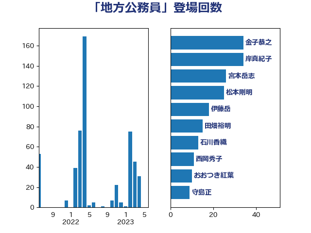

単語「地方公務員」

| 金子恭之 | 自由民主党 | 34 回 |
| 岸真紀子 | 立憲民主党 | 34 回 |
| 宮本岳志 | 日本共産党 | 26 回 |
| 松本剛明 | 自由民主党 | 25 回 |
| 伊藤岳 | 日本共産党 | 18 回 |
| 田畑裕明 | 自由民主党 | 15 回 |
| 石川香織 | 立憲民主党 | 13 回 |
| 西岡秀子 | 国民民主党 | 11 回 |
| おおつき紅葉 | 立憲民主党 | 10 回 |
| 守島正 | 日本維新の会 | 9 回 |
| 竹詰仁 | 国民民主党 | 8 回 |
| 後藤茂之 | 自由民主党 | 8 回 |
| 吉良よし子 | 日本共産党 | 7 回 |
| 柳ヶ瀬裕文 | 日本維新の会 | 6 回 |
| 保岡宏武 | 自由民主党 | 6 回 |
| 赤羽一嘉 | 公明党 | 5 回 |
| 芳賀道也 | 国民民主党 | 5 回 |
| 舞立昇治 | 自由民主党 | 5 回 |
| 平木大作 | 公明党 | 5 回 |
| 尾身朝子 | 自由民主党 | 5 回 |
| 北神圭朗 | 無所属 | 5 回 |
| 加藤勝信 | 自由民主党 | 5 回 |
| 階猛 | 立憲民主党 | 4 回 |
| 寺田稔 | 自由民主党 | 4 回 |
| 塩川鉄也 | 日本共産党 | 4 回 |
| 細田博之 | 自由民主党 | 3 回 |
| 柴愼一 | 立憲民主党 | 3 回 |
| 本村伸子 | 日本共産党 | 3 回 |
| 小沢雅仁 | 立憲民主党 | 3 回 |
| 中川康洋 | 公明党 | 3 回 |
| 三浦靖 | 自由民主党 | 3 回 |
| 野田聖子 | 自由民主党 | 2 回 |
| 谷田川元 | 立憲民主党 | 2 回 |
| 若松謙維 | 公明党 | 2 回 |
| 紙智子 | 日本共産党 | 2 回 |
| 福島みずほ | 社会民主党 | 2 回 |
| 礒崎哲史 | 国民民主党 | 2 回 |
| 白石洋一 | 立憲民主党 | 2 回 |
| 田村智子 | 日本共産党 | 2 回 |
| 永岡桂子 | 自由民主党 | 2 回 |
| 武田良太 | 自由民主党 | 2 回 |
| 櫻井周 | 立憲民主党 | 2 回 |
| 森屋隆 | 立憲民主党 | 2 回 |
| 末松信介 | 自由民主党 | 2 回 |
| 吉川元 | 立憲民主党 | 2 回 |
| 古賀友一郎 | 自由民主党 | 2 回 |
| 古賀之士 | 立憲民主党 | 2 回 |
| 中川貴元 | 自由民主党 | 2 回 |
| 下野六太 | 公明党 | 2 回 |
| 阿部司 | 日本維新の会 | 1 回 |
| 西田実仁 | 公明党 | 1 回 |
| 藤井一博 | 自由民主党 | 1 回 |
| 葉梨康弘 | 自由民主党 | 1 回 |
| 美延映夫 | 日本維新の会 | 1 回 |
| 神谷裕 | 立憲民主党 | 1 回 |
| 浜野喜史 | 国民民主党 | 1 回 |
| 森屋宏 | 自由民主党 | 1 回 |
| 柚木道義 | 立憲民主党 | 1 回 |
| 杉尾秀哉 | 立憲民主党 | 1 回 |
| 早稲田ゆき | 立憲民主党 | 1 回 |
| 打越さく良 | 立憲民主党 | 1 回 |
| 庄子賢一 | 公明党 | 1 回 |
| 岸田文雄 | 自由民主党 | 1 回 |
| 岡田直樹 | 自由民主党 | 1 回 |
| 岡本あき子 | 立憲民主党 | 1 回 |
| 山東昭子 | 自由民主党 | 1 回 |
| 山本博司 | 公明党 | 1 回 |
| 山口那津男 | 公明党 | 1 回 |
| 小寺裕雄 | 自由民主党 | 1 回 |
| 奥野総一郎 | 立憲民主党 | 1 回 |
| 天畠大輔 | れいわ新選組 | 1 回 |
| 大石あきこ | れいわ新選組 | 1 回 |
| 勝部賢志 | 立憲民主党 | 1 回 |
| 倉林明子 | 日本共産党 | 1 回 |
| 佐藤正久 | 自由民主党 | 1 回 |
| 伊波洋一 | 無所属 | 1 回 |